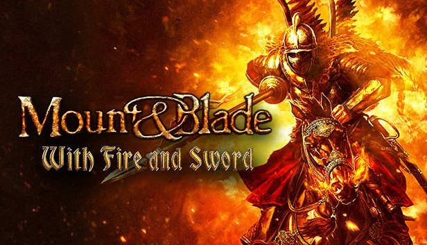
Self-Directed
Mount & Blade Community Maps
Community Level Designer / Server Operator · 2015 – 2018
Project Information
- Release page
- View page
- Release Year
- 2015–2018
- Studio
- Self-Directed
- Position
- Community Level Designer / Server Operator
Position Summary
Long-running self-directed multiplayer mapping project for Mount & Blade: With Fire & Sword. The work focused on balance, lanes, metrics, long-term iteration, and keeping maps readable under live community play, while also supporting an active server community and gameplay modifications.
Selected Responsibilities
- Designed and iterated 20+ original multiplayer maps and overhauled 50+ community maps.
- Balanced layouts around weapon ranges, movement speed, game modes, player traffic patterns, and faction matchups.
- Managed and grew an online server community through content cadence, variety, and gameplay quality.
- Supported client-side and server-side gameplay modifications tied to live community needs.
Trailer / Footage
Selected Gallery
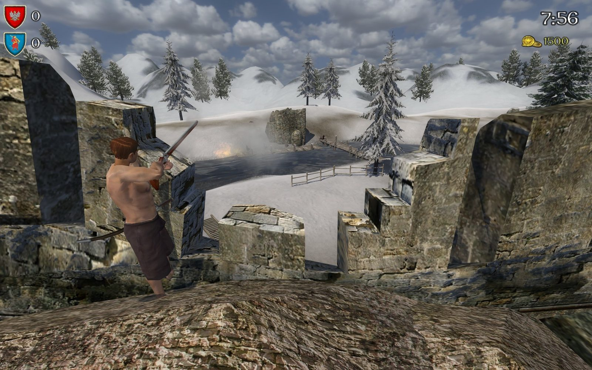
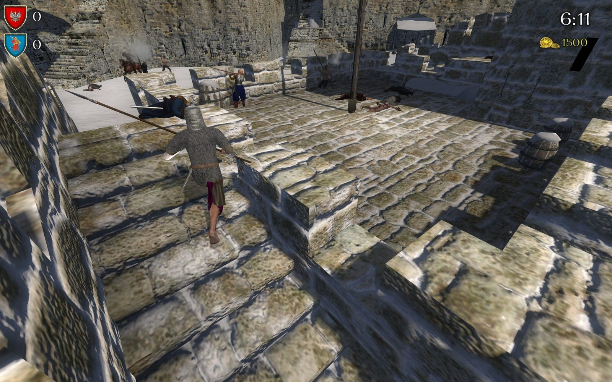
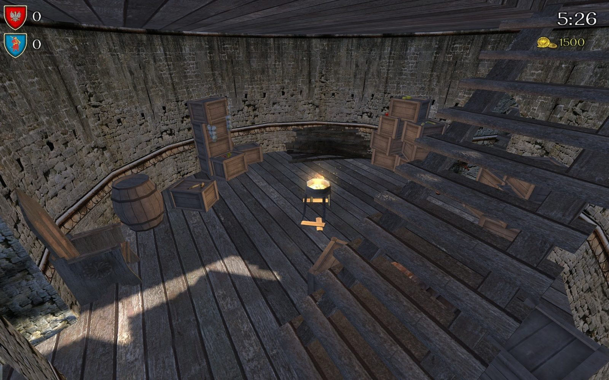
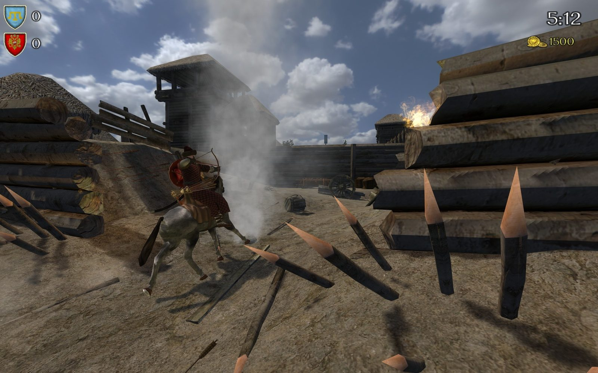
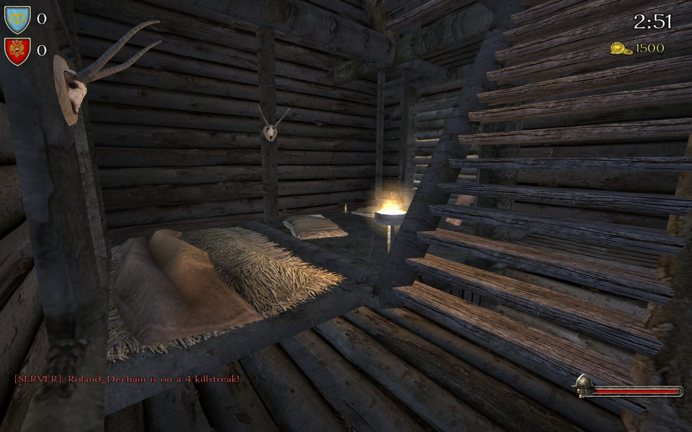
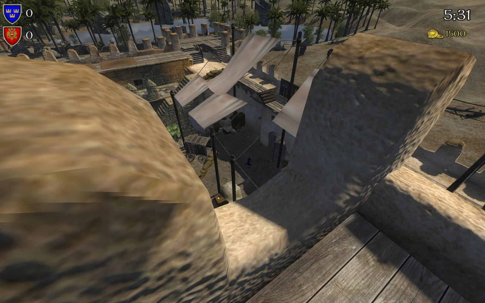
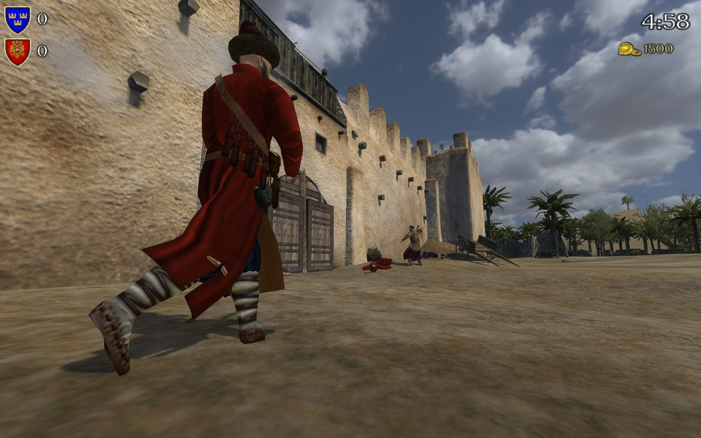
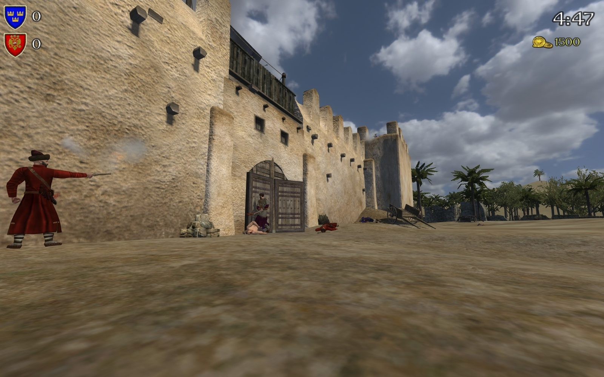
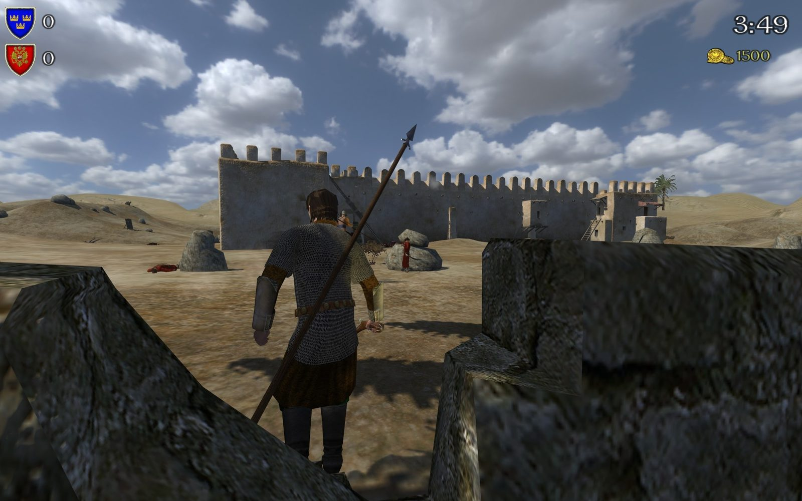
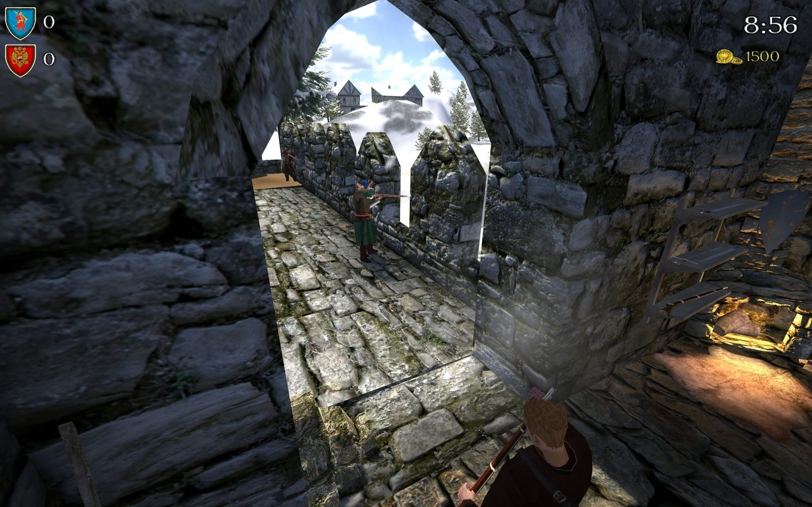
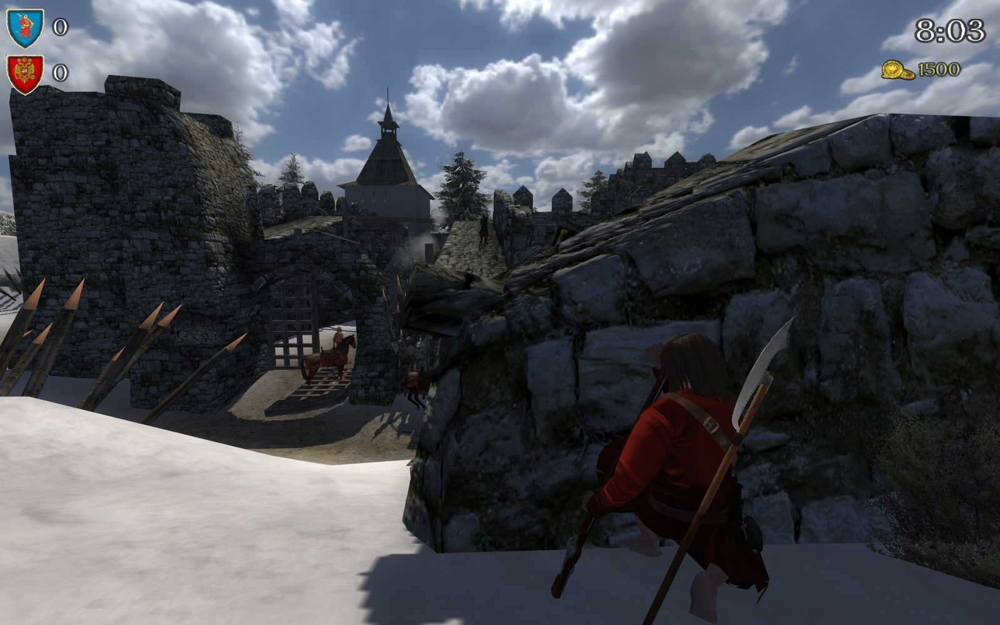
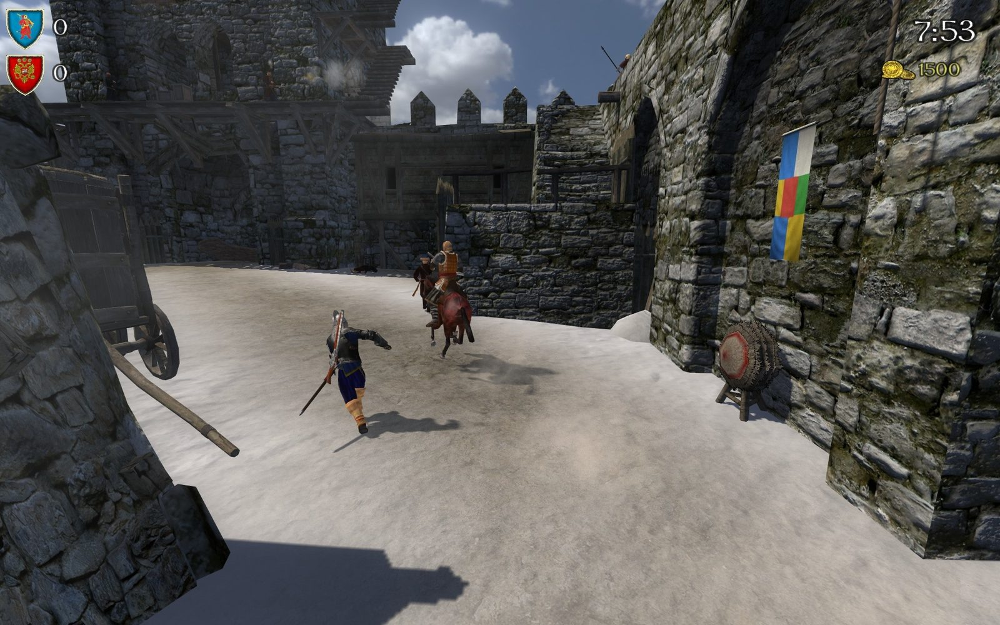
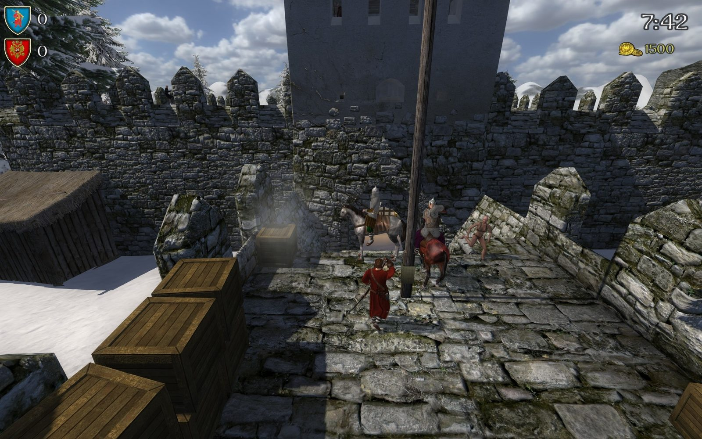
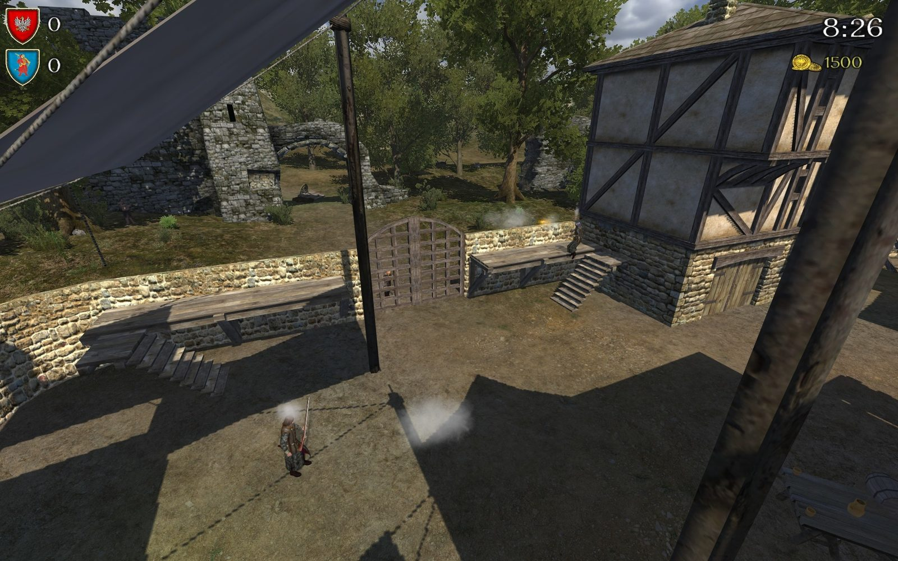
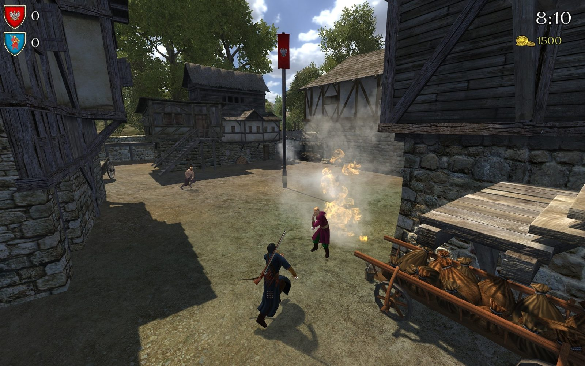